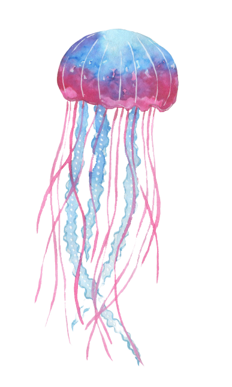
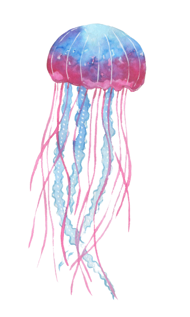

แมงกะพรุน หรือ กะพรุน จัดอยู่ในประเภทสัตว์ไม่มีกระดูกสันหลัง ไฟลัมไนดาเรีย ไฟลัมย่อยเมดูโซซัว แบ่งออกเป็นอันดับได้ 5 อันดับ (ดูในตาราง) ลักษณะลำตัวใสและนิ่มมีโพรงทำหน้าที่เป็นทางเดินอาหารมีเข็มพิษที่บริเวณหนวดที่อยู่ด้านล่าง ไว้ป้องกันตัวและจับเหยื่อ เมื่อโตเต็มวัย ส่วนประกอบหลักในลำตัวเป็นน้ำร้อยละ 94-98 ด้านบนเป็นวงโค้งคล้ายร่ม ด้านล่างตอนกลางเป็นอวัยวะทำหน้าที่กินและย่อยอาหาร พบได้ในทะเลทุกแห่งทั่วโลก แมงกะพรุนส่วนใหญ่จัดอยู่ในอันดับไซโฟซัว แต่ก็บางประเภทที่อยู่ในอันดับไฮโดรซัว อาทิ แมงกะพรุนไฟหมวกโปรตุเกส (Physalia physalis) ซึ่งเป็นแมงกะพรุนที่มีพิษร้ายแรงที่สุดในโลก และแมงกะพรุนอิรุคันจิ (Malo kingi) ที่อยู่ในอันดับคูโบซัว ก็ถูกเรียกว่าแมงกะพรุนเช่นกัน
รูปร่าง
แมงกะพรุนเป็นสัตว์ที่มีลำตัวโปร่งใส ร่างกายประกอบด้วยเจลาตินเป็นส่วนใหญ่ สามารถมองเห็นเข้าไปได้ถึงอวัยวะภายใน เป็นสัตว์ที่ไม่มีทั้งสมองหรือหัวใจ ลำตัวด้านบนของแมงกะพรุนมีลักษณะคล้ายร่ม เรียกว่า "เมดูซา" ซึ่งศัพท์นี้ก็ใช้เป็นอีกชื่อหนึ่งของแมงกะพรุนด้วยเช่นกัน แมงกะพรุนเป็นสัตว์ที่ถือกำเนิดขึ้นมาแล้วกว่า 505 หรือ 600 ล้านปี โดยถือกำเนิดก่อนไดโนเสาร์ถึง 230 ล้านปี หรือก่อนมนุษย์ราว 500,000 ปี โดยถือได้ว่าเป็นสัตว์ที่ถือกำเนิดมานานแล้วจำพวกหนึ่งที่มีวิวัฒนาการสูงสุด มีวงจรชีวิตที่ขยายพันธุ์ได้ทั้งแบบอาศัยเพศและไม่อาศัยเพศ
วงจรชีวิต
หลังจากผสมพันธุ์แล้ว แมงกะพรุนเมื่อได้ปฏิสนธิแล้ว หลังจากนั้นตัวอ่อนจะพัฒนาขึ้นมา มีลักษณะเหมือนขนหรือหนอนตัวเล็ก ๆ มีขนละเอียดรอบตัว เรียกว่า "ซิเลีย" จากนั้นจะพัฒนาไปเป็น "พลานูลา" จะคืบคลานไปหาที่ ๆ เหมาะสมเพื่อเกาะและเปลี่ยนรูปร่างกลายเป็น "โพลิป" ซึ่งมีสันฐานเหมือนดอกไม้ทะเลขนาดจิ๋ว คือ มีลำตัวที่เหมือนกับแจกันเกาะอยู่กับวัสดุต่าง ๆ ลำตัวหงายขึ้น โดยมีหนวดอยู่รอบปากด้านบน ซึ่งแตกต่างไปจากแมงกะพรุนตัวเต็มวัย เมื่อโพลิปได้อยู่ในสภาพแวดล้อมที่เหมาะสม และจำเพาะก็จะเกิดการแตกหน่อซ้อนกันเป็นชั้น ๆ ซึ่งคือ แมงกะพรุนขนาดเล็กที่ซ้อนกันเป็นชั้น ๆ จะหลุดและลอยไปตามกระแสน้ำ ที่เรียกว่า "อีฟีรา" หรือ "เมดูซา" มีลักษณะเหมือนแมงกะพรุนตัวเต็มวัย คือ ลำตัวคว่ำลง หนวดอยู่ด้านล่าง หากแมงกะพรุนในขั้นนี้ได้รับอาหารที่พอเพียง อยู่ในสภาวะแวดล้อมที่เหมาะสม ก็จะเจริญเติบโตกลายเป็นแมงกะพรุนตัวเต็มวัย เข้าสู่วัยเจริญพันธุ์ต่อไปก็จะเข้าสู่วงจรเหล่านี้ใหม่อีกครั้ง
พิษ
แมงกะพรุนหลายชนิดมีพิษ โดยบริเวณหนวดและแขนงที่ยื่นรอบปาก เรียกว่า "มีนีมาโตซีส" หรือเข็มพิษ ใช้สำหรับฆ่าเหยื่อ หรือทำให้เหยื่อสลบก่อนจับกินเป็นอาหาร ซึ่งโดยมากเป็น ปลา และใช้สำหรับป้องกันตัว ปริมาณของนีมาโตซีสอาจมีจำนวนถึง 80,000 เซลล์ ใน 1 ตารางเซนติเมตรเท่านั้น ภายในนีมาโตซีสนี้เองมีน้ำพิษที่เป็นอันตรายทำให้เกิดอาการคัน เป็นผื่น บวมแดง เป็นรอยไหม้ ปวดแสบปวดร้อน และเป็นแผลเรื้อรังได้ หรืออาจถึงขั้นเสียชีวิตได้ ขึ้นอยู่กับแมงกะพรุนแต่ละชนิด ในชนิด Chironex fleckeri ซึ่งเป็นแมงกะพรุนกล่องชนิดที่มีขนาดใหญ่ที่สุด มีเซลล์เข็มพิษมากถึง 4-5,000,000,000 ล้านเซลล์ ในหนวดทั้งหมด 60 เส้น ซึ่งมีผลทางระบบโลหิต โดยไปทำลายเซลล์เม็ดเลือดแดง ทำให้โลหิตเป็นพิษ และเสียชีวิตลงได้ในระยะเวลาอันสั้น โดยเฉพาะอย่างยิ่งกับสัตว์เลี้ยงลูกด้วยนม 
